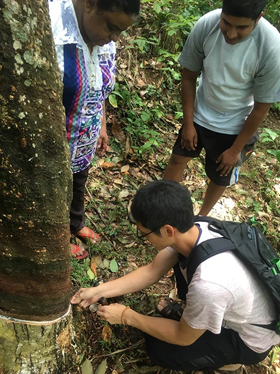
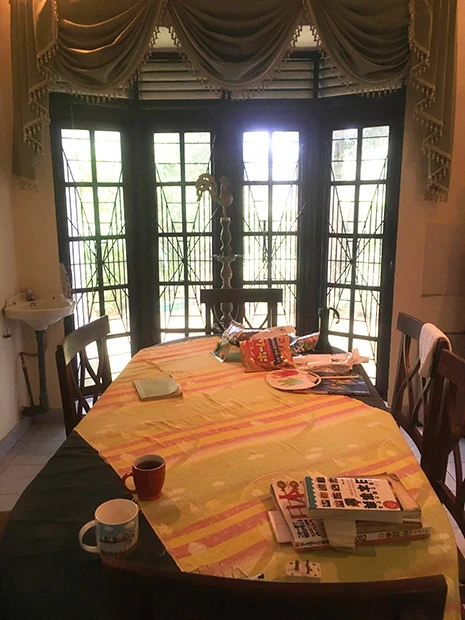

「仕事をしている故、長期休暇がとれませんが、短期間でもホームステイ体験、英会話、その他体験ができるので、この留学を決めました。
英語の先生が、自分のスキルを素早く把握し、レベルに合ったレッスンを提供してくれました。
レッスンで用いる教材以外でオススメの学習方法も教えてくれて、英語への関心が深まりました。
宿題は主に復習です。
ホームステイは、不満に思う点は一切ありませんでした。
のんびりと過ごすことができました。
ただ、ホストファミリーの家事のサポートがもう少しできればなと後悔しています。
現地の方は、日本のカレーのルーには、ハチミツが入っているのと甘いという点で好んでいませんでした。
実際、以前にホームステイされた方のルーが残っていたので、もし日本食を紹介するなら、日本のカレーよりも他の日本食にした方が良いかもしれません。
低開発村視察は、本来、休日にもかかわらず、仕事内容（天然ゴム）を紹介してくださり、良い経験になりました。
スリランカに行く前は、インフラ整備が不十分なイメージでした。
行ってみると、実際に苦に思うことはほとんどなく、停電もなかったので、一歩ずつ発展していると思いました。
人柄も温厚な方が多く、助けて頂いた点も多々ありました。

スリランカで携帯電話を使う場合、SIMカードがとても便利なので、オススメです。
WIFIはあまり使えません。
マーネル先生には、英会話はもちろん、食事、旅行のアドバイス等あらゆる点において気を使って頂き、満足しています。
ただ、レッスン日や休日が現地に着いてからでないと把握できなかったので、少し不安でした。
充実した滞在となりました。
また、この留学プログラムでスリランカに行きたいと思います。
心より感謝申し上げます。」